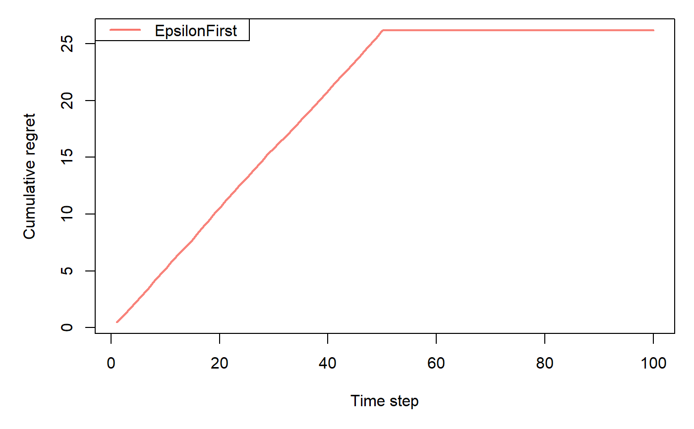
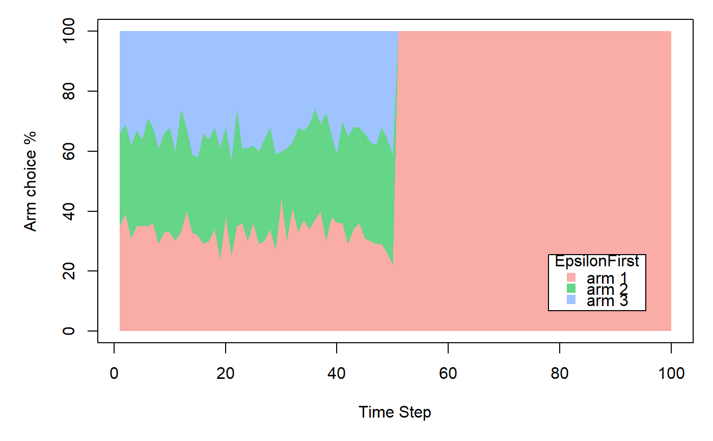

EpsilonFirstPolicy implements a "naive" policy where a pure exploration phase
is followed by a pure exploitation phase.
Exploration happens within the first epsilon * N time steps.
During this time, at each time step t, EpsilonFirstPolicy selects an arm at random.
Exploitation happens in the following (1-epsilon) * N steps,
selecting the best arm up until epsilon * N for either the remaining N trials or horizon T.
In case of a tie in the exploitation phase, EpsilonFirstPolicy randomly selects and arm.
policy <- EpsilonFirstPolicy(epsilon = 0.1, N = 1000, time_steps = NULL)
epsilonnumeric; value in the closed interval (0,1] that sets the number of time steps to explore
through epsilon * N.
Ninteger; positive integer which sets the number of time steps to explore through epsilon * N.
time_stepsinteger; positive integer which sets the number of time steps to explore - can be used instead of epsilon and N.
new(epsilon = 0.1, N = 1000, time_steps = NULL)Generates a new EpsilonFirstPolicy
object. Arguments are defined in the Argument section above.
set_parameters()each policy needs to assign the parameters it wants to keep track of
to list self$theta_to_arms that has to be defined in set_parameters()'s body.
The parameters defined here can later be accessed by arm index in the following way:
theta[[index_of_arm]]$parameter_name
get_action(context)here, a policy decides which arm to choose, based on the current values of its parameters and, potentially, the current context.
set_reward(reward, context)in set_reward(reward, context), a policy updates its parameter values
based on the reward received, and, potentially, the current context.
Gittins, J., Glazebrook, K., & Weber, R. (2011). Multi-armed bandit allocation indices. John Wiley & Sons. (Original work published 1989)
Sutton, R. S. (1996). Generalization in reinforcement learning: Successful examples using sparse coarse coding. In Advances in neural information processing systems (pp. 1038-1044).
Strehl, A., & Littman, M. (2004). Exploration via model based interval estimation. In International Conference on Machine Learning, number Icml.
Core contextual classes: Bandit, Policy, Simulator,
Agent, History, Plot
Bandit subclass examples: BasicBernoulliBandit, ContextualLogitBandit,
OfflineReplayEvaluatorBandit
Policy subclass examples: EpsilonGreedyPolicy, ContextualLinTSPolicy
horizon <- 100L simulations <- 100L weights <- c(0.9, 0.1, 0.1) policy <- EpsilonFirstPolicy$new(time_steps = 50) bandit <- BasicBernoulliBandit$new(weights = weights) agent <- Agent$new(policy, bandit) history <- Simulator$new(agent, horizon, simulations, do_parallel = FALSE)$run()#>#>#>#>#>#>#>